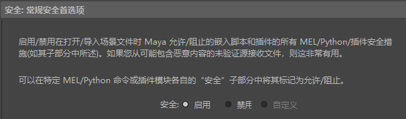

通过安全首选项，可以设置在打开文件、运行脚本或加载插件时 Maya 执行的操作。有时，场景文件可能包含恶意代码或病毒，例如，从不受信任的源下载的场景文件。
这样，如果 Maya 发现这些文件中隐藏了任何危险代码，系统会向您发出警告。
常规安全首选项(General Security Preferences)
- 安全(Security)
- “常规安全首选项”(General Security Preferences)控制窗口中的所有安全设置。

使用“常规安全首选项”(General Security Preferences)选项启用安全设置
-
- 选择“启用”(On)可同时启用所有安全首选项（MEL、Python、插件）。
- 选择“禁用”(Off)可禁用安全设置，如果 Maya 阻止加载文件，则可能需要禁用这些设置。（在本例中，请参见本主题中有关已标记命令/已标记脚本的部分。）
- 如果要更改任何默认设置，请选择“自定义”(Custom)。激活/取消激活“启动脚本权限”(Startup Script Permissions)中的任何子部分时，Maya 会自动将此设置切换为“自定义”(Custom)。
启动脚本权限(Startup Script Permissions)
通过这些设置，可以设置在打开包含自动运行的脚本的场景时 Maya 执行的操作。
- 读取和执行“userSetup”脚本(Read and execute 'userSetup' scripts)
-
启用此选项可对任何 userSetup 脚本运行哈希检查，以确保它们可信。哈希检查通过检查数据不包含非脚本创建者的代码来确保脚本是安全的。
如果脚本未通过哈希检查，Maya 会向您发出警告，并允许您保存新的哈希值。保存新哈希值意味着，检测到的对原始脚本的更改是安全的。这样，脚本就会通过未来的哈希检查。
默认情况下，此检查处于禁用状态。
默认情况下，脚本位于以下位置：
- Windows：..\My Documents\maya\<版本>\scripts
- macOS：~/Library/Preferences/Autodesk/maya/<版本>/scripts
- Linux：~/maya/<版本>/scripts
- 如果“userSetup”脚本包含更改，则发出警告(Warn me if 'userSetup' scripts contain changes)
-
激活此选项，以便 Maya 对任何 userSetup 脚本执行哈希检查，以确保它们可信。哈希检查通过检查数据不包含非脚本创建者的任何内容来验证脚本的完整性。
如果脚本未通过哈希检查，Maya 会向您发出警告，并允许您保存新的哈希值。保存新哈希值意味着，检测到的对原始脚本的更改是可接受的。这样，脚本就会通过未来的哈希检查。
默认情况下，此检查处于禁用状态。
安全日志记录(Security logging)
- 启用安全日志记录(Enable security logging)
- 启用此选项，以便将这些设置发现的任何安全事件（MEL、Python 或插件）保存到名为“mayaSecurity”的日志文件中。
-
- 日志文件格式(Log file format)
- 用于设置“mayaSecurity”文件类型。您可以选择 JSON 或 XML。
- 默认安全日志记录目录(Default security logging directory)
- 用于设置“mayaSecurity”文件的保存位置。
MEL
允许您阻止特定的 MEL 命令，以便在加载场景文件时不运行这些命令。如果您使用的文件来自未知源，并且希望确保它们不包含危险代码，则此选项非常有用。
默认情况下，此选项处于启用状态。
- 安全 MEL 加载(Secure MEL loading)
- 当此选项处于活动状态时，Maya 会请求权限或拒绝运行命令。此行为取决于您在“已标记命令”(Flagged commands)列表中设置的内容。
- 已标记命令(Flagged commands)
-
从列表中选择当“安全 MEL 加载”(Secure MEL loading)处于活动状态时要标记的命令。已标记命令是您担心可能有危险的命令。
单击“添加”(Add)打开一个窗口，从中可以将其他命令添加到列表。也可以选择列表中已存在的命令，然后单击“移除”(Remove)以停止标记它们。
- 已标记命令的默认操作(Default action for flagged commands)
-
用于设置在加载包含已标记 MEL 命令的文件时 Maya 对这些命令执行的操作。
“请求权限”(Ask for permission)表示每次 Maya 打开文件在“已标记命令”(Flagged commands)列表中查找命令时，您都会收到通知。该设置为默认设置。
“拒绝”(Deny)表示阻止在打开文件时运行“已标记命令”(Flagged commands)上的任何已标记命令。
- 允许在场景文件中使用全局程序定义(Allow global proc definition in scene file)
-
用于允许嵌入式 MEL 脚本定义全局程序。禁用此设置后，Maya 会阻止文件加载时的所有全局程序调用。默认情况下，此选项处于禁用状态。
Python
允许您阻止嵌入在 .
ma/.
mb 文件中的 Python 命令或模块（包括 scriptNode 或 scriptJob），以便它们在加载场景文件时不会运行。如果您使用的文件来自未知源，并且希望确保它们不包含危险代码，则此选项非常有用。
- Python
-
通过此部分，可以设置当找到嵌入在其打开的文件中的 Python 命令或模块时 Maya 执行的操作。
“执行前检查(安全)”(Check before executing (secure))允许您使用“执行”(Execute)和“不执行”(Don't Execute)选项自定义允许或拒绝的命令/模块。
“执行”(Execute)和“不执行”(Don't Execute)用于启用或拒绝 Maya 找到的所有 Python 模块。默认情况下，此选项设置为“执行”(Execute)，但我们强烈建议您将其切换为“执行前检查(安全)”(Check before executing(secure))，然后从不受信任的源加载任何文件。
Python 内置函数(Python Built-in Functions)
- 安全的内置函数(Secure built-in functions)
-
激活此设置，以便 Maya 根据“已标记内置函数”(Flagged built-in functions)列表中的内容请求权限或拒绝运行命令。
仅当 Python 设置为“执行前检查(安全)”(Check before executing(secure))时，此设置才有效。
- 已标记内置函数(Flagged built-in functions)
-
从列表中选择当“安全文件加载”(Secure file loading)处于活动状态时要标记的命令。
指定当“安全的内置函数”(Secure built-in functions)选项处于活动状态时要拒绝的 Python 命令。带有复选标记的函数已被标记，不允许运行。
- 导入模块的默认操作(Default action for importing modules)
-
用于设置在加载包含已标记 Python 命令的文件时 Maya 对这些命令执行的操作。
“请求权限”(Ask for permission)表示每次 Maya 打开文件在“已标记命令”(Flagged commands)列表中查找命令时，您都会收到通知。该设置为默认设置。
“拒绝”(Deny)表示阻止在打开文件时运行“已标记命令”(Flagged commands)列表中的任何已标记命令。
Python 模块(Python Modules)
- 安全模块导入(Secure module import)
- 启用此选项后，Maya 会请求权限或拒绝加载不在“受信任的模块”(Trusted modules)列表中的所有模块。这取决于当前“已标记命令的默认操作”(Default action for flagged commands)设置，并且仅当 Python 设置为“执行前检查(安全)”(Check before executing(secure))时才有效。
- 受信任的模块(Trusted modules)
- 指定“安全模块导入”(Secure module import)处于启用状态时允许的 Python 模块。单击“添加”(Add)，然后导航到文件浏览器中的文件夹以将位置添加到列表中。也可以选择列表中已存在的位置，然后单击“移除”(Remove)将其移除。
- 导入模块的默认操作(Default action for importing modules)
- 确定 Maya 如何处理“受信任的模块”(Trusted modules)列表之外的模块。
- “请求权限”(Ask for permission)表示每次 Maya 加载不在“受信任的模块”(Trusted modules)列表中的模块时，您都会收到通知。
- “拒绝”(Deny)表示阻止在加载时导入未列出的模块。
- 默认值为“请求权限”(Ask for permission)。
插件(Plugins)
用于根据插件的位置控制可以加载哪些插件。
- 安全插件加载(Secure plug-in loading)
- 激活此设置，以便 Maya 请求权限或阻止加载插件。此选项的操作取决于在“已标记命令的默认操作”(Default action for flagged commands)设置中设置的内容。
- 我的受信任插件位置(My trusted plugin locations)
-
用于在“安全插件加载”(Secure plugin loading)处于活动状态时添加安全插件位置。
单击“添加”(Add)，然后使用文件浏览器将位置添加到列表。也可以在列表中选择位置，然后单击“移除”(Remove)将其移除。
注： Maya 还有一个受信任插件位置列表，这些位置不显示在此列表中。
- 不受信任位置的默认操作(Default action for untrusted locations)
-
启用“安全插件加载”(Secure plugin loading)后，此设置用于定义插件从非受信任插件位置加载数据时发生的情况。
“请求权限”(Ask for permission)表示每次尝试运行来自非受信任位置的插件时，您都会收到通知。该设置为默认设置。
“拒绝”(Deny)表示阻止来自非受信任位置的任何插件。